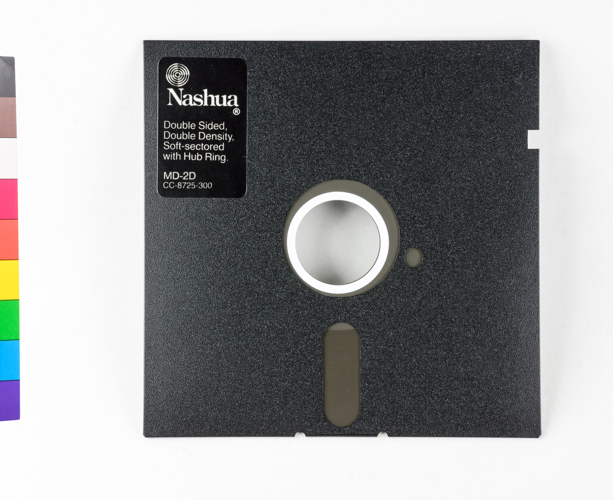
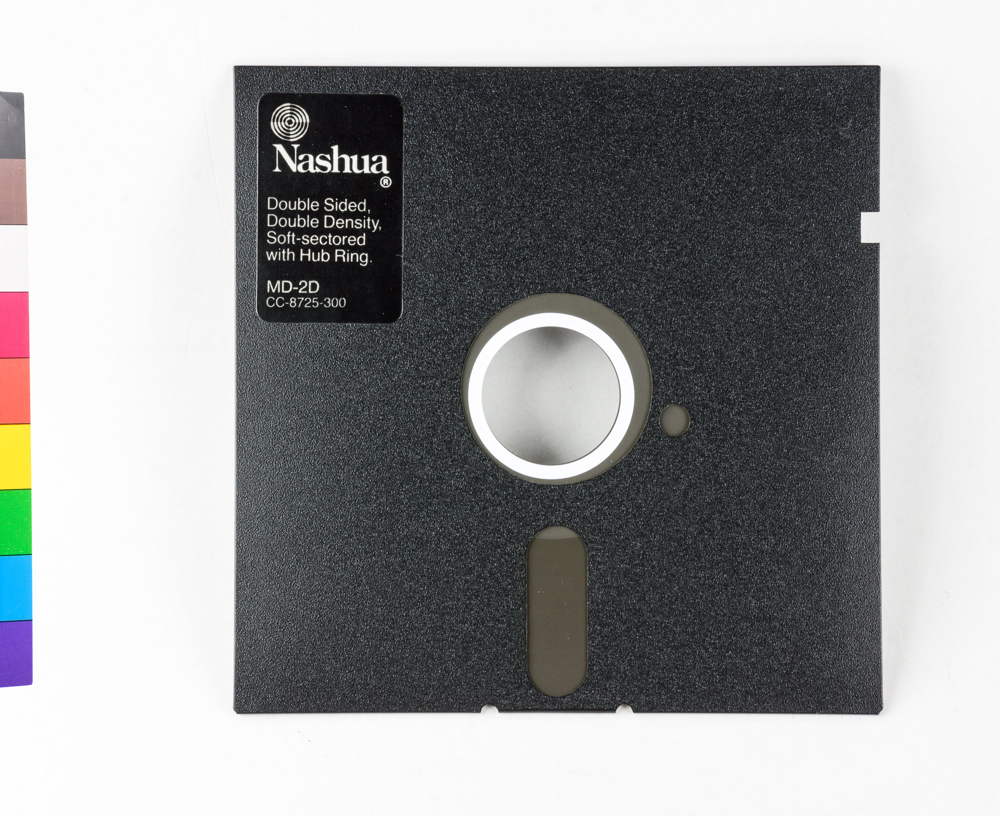

EL ORDENADOR
Sistema operativo:
Es la otra gran parte de un ordenador, el software, que sería el conjunto de programas que gestiona los recursos del hardware y administra otros programas que el usuario deseara instalar.
Luego de haber comprado nuestro equipo, e instalarlo siguiendo el manual (y un poco de ayuda de este curso), y procedimos a encenderlo, entonces vemos que aparece nuestro flamante icono de windows y nos quedamos viendo la pantalla que tiene un bonito paisaje y preguntamos, y ahora qué?
Bueno, actualmente Windows es un sistema operativo, pero no siempre fue así, los primeros fueron gestores de archivos que se instalaban sobre un sistema operativo, y antes incluso, el sistema operativo había que ser "cargado" en la máquina mediante diskettes o discos flexibles
o discos flexibles
En ese entonces, no había esa pantalla con el paisaje, era una pantalla negra o azul que ostentaba un símbolo que representaba la unidad de almacenamiento en la que estaba instalado y un guión titilante a la espera de un comando para responder, fuera correcto o no.
Por qué explicar esto que desde que apareció windows 95 no se usa más? pienso que es importante ya que gracias a este conocimiento, se aprende a desplazarse entre carpetas, crear carpetas y archivos, manejar rutas y otras habilidades que han caído en el olvido y genera muchos dolores de cabeza al no entender cómo funciona lo que de forma cotidiana hacemos a diario.
Bien, para almacenar datos, el ordenador usa discos, como se explicó en el apartado "componentes". El disco duro está instalado en la placa base, y los discos flexibles o extraíbles podemos adquirirlos en la tiendita de la esquina. Para identificar estos discos, el sistema operativo les asigna sitios llamados "unidades". Estas unidades están identificadas con letras y la siguiente nomenclatura: A:\>
En tiempos antiguos, cuando los ordenadores no tenían disco duro o, en caso de tenerlo, no albergaba el sistema operativo, había que cargarlo desde un diskette, y este era lo primero que el ordenador "leía", y debía contener este diskette un programa de arranque o BOOT. Así que obviamente, a esta unidad había que nombrarla con la primera letra del abecedario "A".
Por razones obvias, el sistema operativo debía estar "cargado" en el sistema (es decir, había que dejar el diskette ahí) Así que se recurrió a la anexión de una segunda unidad de disco, a la que obviamente se le asignó la segunda letra: "B", entonces había A:\> y B:\>
No era común, pero en el caso de que algún programa necesitara más de un diskette, estos se almacenaban en la memoria RAM y se procedía a la inserción del resto de los discos uno a uno en la unidad B:\>
En vista de lo engorroso que resultaba esto, entró en el juego un disco duro que no hubiera que estar retirando y que pudiera "cargar" el sistema operativo, claramente se le asignó la tercera letra: "C". Resultó tan efectivo esto, que se llegó a instalar definitivamente el sistema operativo allí, liberando a los diskettes de su misión. Entonces los usuarios podían tener sus programas en los diskettes sin preocuparse de llevar el sistema operativo en uno de ellos. Así, se usaban las unidades A y B y se dquedaba la C fija, y así hasta nuestros tiempos, C:\> sigue siendo nuestro querido disco rígido.
Luego, todas las unidades, incluyendo otros discos duros, serán asignados con las letras siguientes.
Practiquemos un poco:
Las unidades de almacenamiento estabas nombradas con números, por qué?
Seleccione la respuesta correcta: